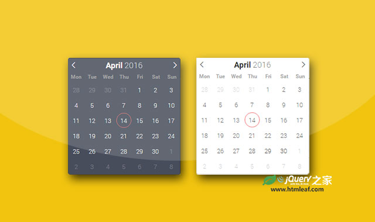
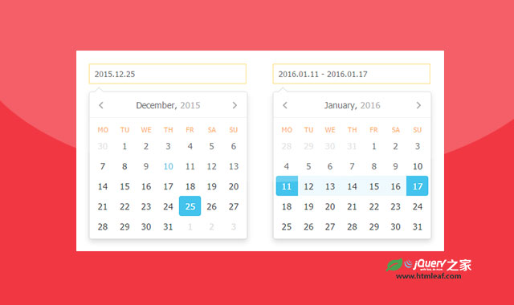

Android时间选择器样式jquery插件
A jQuery Plug-in to select the time with a clock inspired by the Android time picker
jQuery之家
返回下载页
jQuery Clock Time Picker
请选择您的时间：
这是一款Android时间选择器样式的jquery插件。这个插件可以在桌面电脑和手机中正常工作。
如果你喜欢这个插件，那么你可能也喜欢:

强大的纯JS扁平风格日期时间选择器插件

Air Datepicker|跨浏览器jQuery日期选择器插件